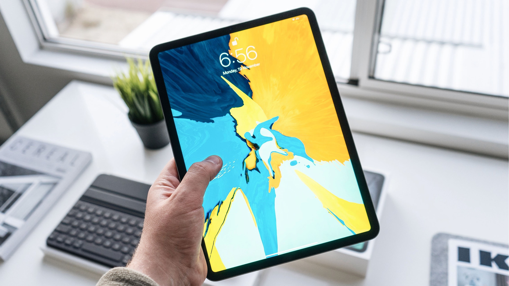
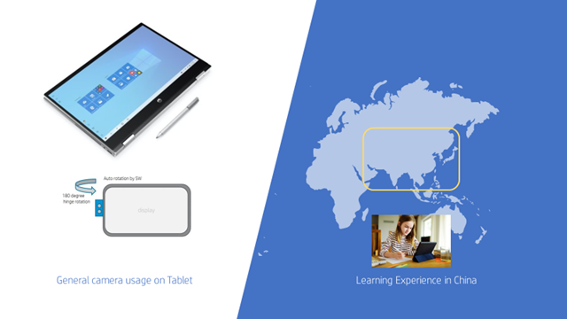
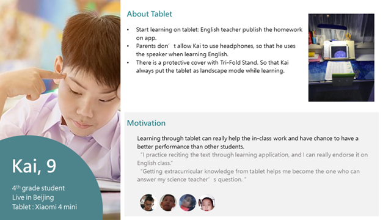
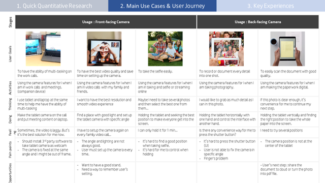
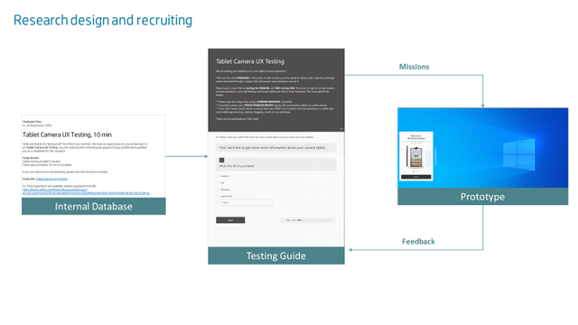
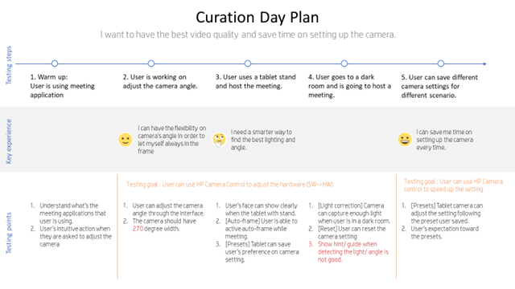
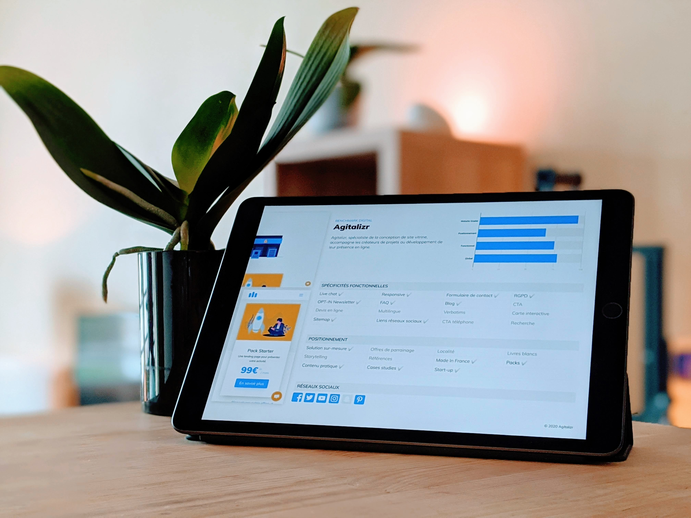

Tablet with Rotatable Camera
HP's first tablet with a rotatable camera opened new experience possibilities well beyond a standard tablet. There are two main groups of target audience -- one is the general population, the other is K-12 students. And the product team defined the main use cases based on the target audience. The video call and photo taking for the general population while the keystone and point to read for K-12 students.
I served as the UX researcher and experience curator on this project, running targeted research studies to inform key product decisions and driving the core team to continuously refine the hardware-software interaction based on user evidence.
— UX Researcher, Experience Curator
- Contextual Inquiry
- Secondary Research
- In-depth interview
- Persona
- Scenarios & Storyboards
- Curation Mapping
- Usability Testing
Approach

Step 1. Current status debriefing
The product targeted two different kinds of target audience with a corresponding market -- US and China. The tablet will have Windows OS and Linux OS to serve different experiences. To understand stakeholders and the relationship between us and the agency is also important. Besides, we should also clarify which step we are in the Product life cycle.

Step 2. User Research
After understanding the PM's expectation, I decided to run different types of the research based on their needs. For the US side, the research goal is to understand the current use cases on tablet camera. Therefore, we collected users' feedback based on the survey. For China side, the research goal is to get deep into the learning scenario. And we ran an in-depth interview with both parents (who is the one making the purchasing decision) and children (who is the real user).

Step 3. Experience Curation
After defining the main theme and key experience on the device, the curator brought out the experience mapping in order to make sure that we have a well deliverable on every touch point. The success on the evaluation matrix became the team goal on product development.

Step 4. Pilot Usability Testing
I tried to bring the agile testing into the team. Based on the product development schedule, hardware is later than the software. We recruited users to help us on testing the software design and tried to make quick adjustments based on user feedback.

Step 5. Usability Testing
This testing goal is to evaluate the interaction we define between the hardware and the software, including camera shutter button, manual rotation and software control. We sent the devices to users then hosted the online testing session for 6 ppl. I set up several tasks and really asked users to use the tablet in specific scenarios, so that we can demonstrate the value of the product innovation.
Result
6
In-depth Interviews
400+
Questionnaire Responses
7
Usability Testing

The tablet launched in early 2022 as the first of its kind on the market. The product release also marked HP's formal entry into the Windows tablet space — a milestone grounded in the user research and curation work that defined its key experiences.